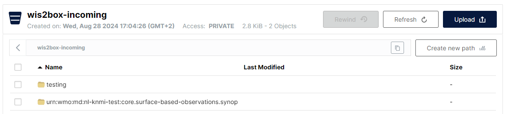

Monitoraggio delle notifiche WIS2
Risultati di apprendimento
Alla fine di questa sessione pratica, sarai in grado di:
- attivare il flusso di lavoro wis2box caricando dati in MinIO utilizzando il comando
wis2box data ingest - visualizzare avvisi ed errori mostrati nella dashboard Grafana
- controllare il contenuto dei dati che vengono pubblicati
Introduzione
La dashboard Grafana utilizza dati da Prometheus e Loki per visualizzare lo stato del tuo wis2box. Prometheus memorizza dati di serie temporali dalle metriche raccolte, mentre Loki memorizza i log dai container in esecuzione sulla tua istanza wis2box. Questi dati ti permettono di controllare quanti dati vengono ricevuti su MinIO e quante notifiche WIS2 vengono pubblicate, e se ci sono errori rilevati nei log.
Per vedere il contenuto delle notifiche WIS2 che vengono pubblicate su diversi argomenti del tuo wis2box puoi utilizzare la scheda 'Monitor' nella wis2box-webapp.
Preparazione
Questa sezione utilizzerà il dataset "surface-based-observations/synop" creato precedentemente nella sessione pratica Configurazione dei dataset in wis2box.
Accedi alla tua VM studente utilizzando il tuo client SSH (PuTTY o altro).
Assicurati che wis2box sia attivo e funzionante:
cd ~/wis2box-1.0.0rc1/
python3 wis2box-ctl.py start
python3 wis2box-ctl.py status
Assicurati di avere MQTT Explorer in esecuzione e connesso alla tua istanza utilizzando le credenziali pubbliche everyone/everyone con una sottoscrizione all'argomento origin/a/wis2/#.
Assicurati di avere accesso all'interfaccia web MinIO andando su http://<tuo-host>:9000 e di essere loggato (utilizzando WIS2BOX_STORAGE_USERNAME e WIS2BOX_STORAGE_PASSWORD dal tuo file wis2box.env).
Assicurati di avere un browser web aperto con la dashboard Grafana per la tua istanza andando su http://<tuo-host>:3000.
Inserimento di alcuni dati
Esegui i seguenti comandi dalla tua sessione client SSH:
Copia il file di dati di esempio aws-example.csv nella directory che hai definito come WI2BOX_HOST_DATADIR nel tuo file wis2box.env.
cp ~/exercise-materials/monitoring-exercises/aws-example.csv ~/wis2box-data/
Assicurati di essere nella directory wis2box-1.0.0rc1 e accedi al container wis2box-management:
cd ~/wis2box-1.0.0rc1
python3 wis2box-ctl.py login
Verifica che i dati di esempio siano disponibili nella directory /data/wis2box/ all'interno del container wis2box-management:
ls -lh /data/wis2box/aws-example.csv
Note
Il WIS2BOX_HOST_DATADIR è montato come /data/wis2box/ all'interno del container wis2box-management dal file docker-compose.yml incluso nella directory wis2box-1.0.0rc1.
Questo ti permette di condividere dati tra l'host e il container.
Esercizio 1: inserimento dati utilizzando wis2box data ingest
Esegui il seguente comando per inserire il file di dati di esempio aws-example.csv nella tua istanza wis2box:
wis2box data ingest -p /data/wis2box/aws-example.csv --metadata-id urn:wmo:md:not-my-centre:core.surface-based-observations.synop
I dati sono stati inseriti con successo? In caso contrario, qual è stato il messaggio di errore e come puoi risolverlo?
Clicca per rivelare la risposta
Vedrai il seguente output:
Error: metadata_id=urn:wmo:md:not-my-centre:core.surface-based-observations.synop not found in data mappings
Il messaggio di errore indica che l'identificatore di metadati fornito non corrisponde a nessuno dei dataset configurati nella tua istanza wis2box.
Fornisci l'ID di metadati corretto che corrisponde al dataset che hai creato nella sessione pratica precedente e ripeti il comando di inserimento dati fino a quando dovresti vedere il seguente output:
Processing /data/wis2box/aws-example.csv
Done
Vai alla console MinIO nel tuo browser e controlla se il file aws-example.csv è stato caricato nel bucket wis2box-incoming. Dovresti vedere che c'è una nuova directory con il nome del dataset che hai fornito nell'opzione --metadata-id:

Note
Il comando wis2box data ingest ha caricato il file nel bucket wis2box-incoming in MinIO in una directory denominata con l'identificatore di metadati che hai fornito.
Vai alla dashboard Grafana nel tuo browser e controlla lo stato dell'inserimento dei dati.
Esercizio 2: controlla lo stato dell'inserimento dei dati
Vai alla dashboard Grafana nel tuo browser e controlla lo stato dell'inserimento dei dati.
I dati sono stati inseriti con successo?
Clicca per rivelare la risposta
Il pannello nella parte inferiore della dashboard principale di Grafana riporta i seguenti avvisi:
WARNING - input=aws-example.csv warning=Station 0-20000-0-60355 not in station list; skipping
WARNING - input=aws-example.csv warning=Station 0-20000-0-60360 not in station list; skipping
Questo avviso indica che le stazioni non sono definite nell'elenco delle stazioni del tuo wis2box. Nessuna notifica WIS2 sarà pubblicata per questa stazione finché non la aggiungerai all'elenco delle stazioni e la assocerai all'argomento per il tuo dataset.
Esercizio 3: aggiungi le stazioni di test e ripeti l'inserimento dei dati
Aggiungi le stazioni al tuo wis2box utilizzando l'editor delle stazioni in wis2box-webapp, e associa le stazioni all'argomento per il tuo dataset.
Ora ricarica il file di dati di esempio aws-example.csv nello stesso percorso in MinIO che hai utilizzato nell'esercizio precedente.
Controlla la dashboard Grafana, ci sono nuovi errori o avvisi? Come puoi vedere che i dati di test sono stati inseriti e pubblicati con successo?
Clicca per rivelare la risposta
Puoi controllare i grafici sulla dashboard principale di Grafana per vedere se i dati di test sono stati inseriti e pubblicati con successo.
Se l'operazione è riuscita, dovresti vedere quanto segue:

Esercizio 4: controlla il broker MQTT per le notifiche WIS2
Vai a MQTT Explorer e controlla se puoi vedere il messaggio di notifica WIS2 per i dati che hai appena inserito.
Quante notifiche di dati WIS2 sono state pubblicate dal tuo wis2box?
Come accedi al contenuto dei dati che vengono pubblicati?
Clicca per rivelare la risposta
Dovresti vedere 6 notifiche di dati WIS2 pubblicate dal tuo wis2box.
Per accedere al contenuto dei dati che vengono pubblicati, puoi espandere la struttura dell'argomento per vedere i diversi livelli del messaggio fino a raggiungere l'ultimo livello e rivedere il contenuto del messaggio di uno dei messaggi.
Il contenuto del messaggio ha una sezione "links" con una chiave "rel" di "canonical" e una chiave "href" con l'URL per scaricare i dati. L'URL sarà nel formato http://<tuo-host>/data/....
Nota che il formato dei dati è BUFR e avrai bisogno di un parser BUFR per visualizzare il contenuto dei dati. Il formato BUFR è un formato binario utilizzato dai servizi meteorologici per scambiare dati. I plugin di dati all'interno di wis2box hanno trasformato i dati da CSV a BUFR prima di pubblicarli.
Visualizzazione del contenuto dei dati che hai pubblicato
Puoi utilizzare la wis2box-webapp per visualizzare il contenuto delle notifiche di dati WIS2 che sono state pubblicate dal tuo wis2box.
Apri la wis2box-webapp nel tuo browser navigando su http://<tuo-host>/wis2box-webapp e seleziona la scheda Monitoring:

Nella scheda di monitoraggio seleziona il tuo dataset-id e clicca su "UPDATE"
Esercizio 5: visualizza le notifiche WIS2 nella wis2box-webapp
Quante notifiche di dati WIS2 sono state pubblicate dal tuo wis2box?
Qual è la temperatura dell'aria riportata nell'ultima notifica alla stazione con identificatore WIGOS=0-20000-0-60355?
Clicca per rivelare la risposta
Se hai inserito con successo i dati di test, dovresti vedere 6 notifiche di dati WIS2 pubblicate dal tuo wis2box.
Per vedere la temperatura dell'aria misurata per la stazione con identificatore WIGOS=0-20000-0-60355, clicca sul pulsante "INSPECT" accanto al file per quella stazione per aprire una finestra pop-up che mostra il contenuto analizzato del file di dati. La temperatura dell'aria misurata in questa stazione era di 25,0 gradi Celsius.
Note
Il container wis2box-api include strumenti per analizzare i file BUFR e visualizzare il contenuto in un formato leggibile dall'uomo. Questo non è un requisito fondamentale per l'implementazione WIS2.0, ma è stato incluso nel wis2box per aiutare gli editori di dati a controllare il contenuto dei dati che stanno pubblicando.
Conclusione
Congratulazioni!
In questa sessione pratica, hai imparato come:
- attivare il flusso di lavoro wis2box caricando dati in MinIO utilizzando il comando
wis2box data ingest - visualizzare le notifiche WIS2 pubblicate dal tuo wis2box nella dashboard Grafana e in MQTT Explorer
- controllare il contenuto dei dati che vengono pubblicati utilizzando la wis2box-webapp